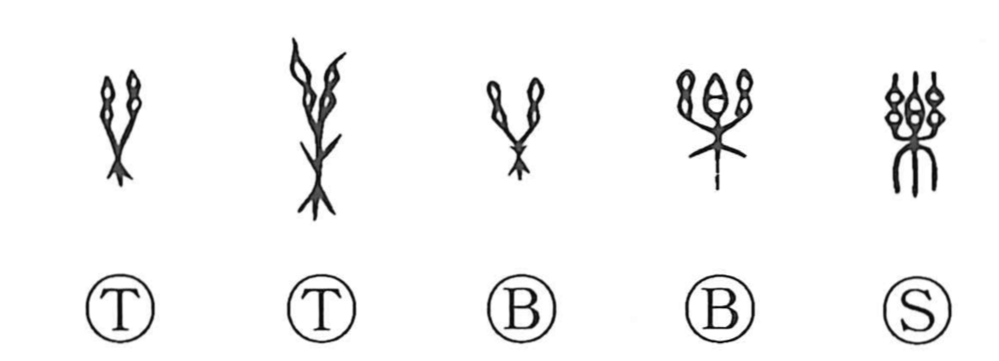

Explanation
楽, formerly 樂, pictures a handbell with a handle. The central 白 represents the body of the bell; the paired 幺 are its hanging threads or tassels, and the lower 木 supplies the handle. The instrument was shaken during sacred music and dancing.
The sound delighted the gods and accompanied the dance through which people approached them. It could also be used by a ritual specialist to drive away the spirits responsible for illness. An old form associated with 療, ‘heal,’ adds the sickness element to this musical instrument.
These uses unfold into three related senses: music, read gaku; enjoyment and ease, read raku; and taking pleasure in or being fond of something, read gō. The pleasure belongs first to the music and the rite, then to the person who enjoys them.